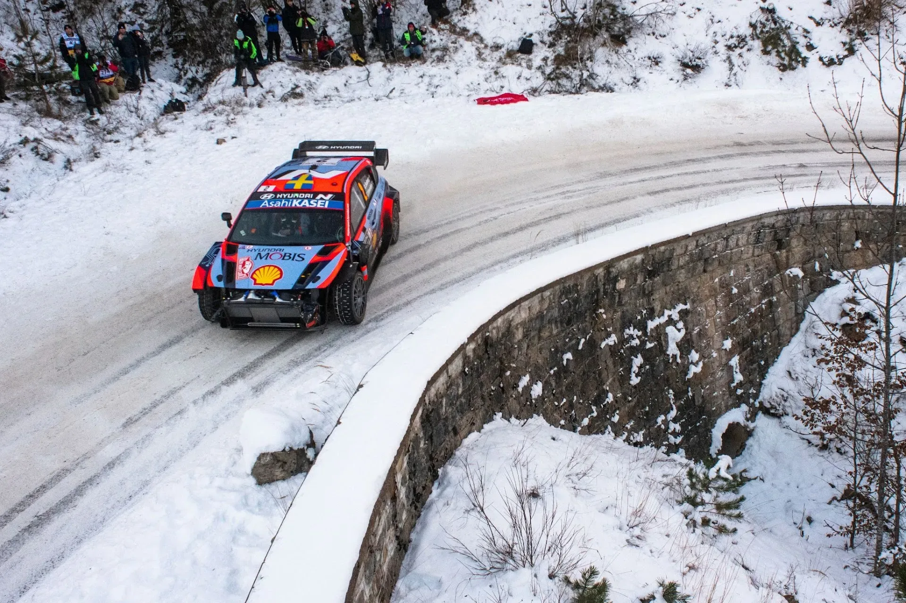
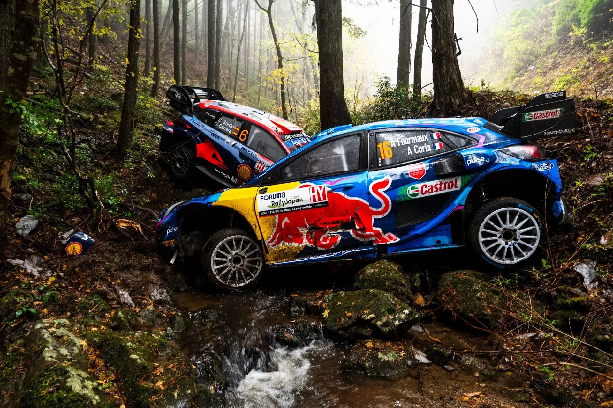
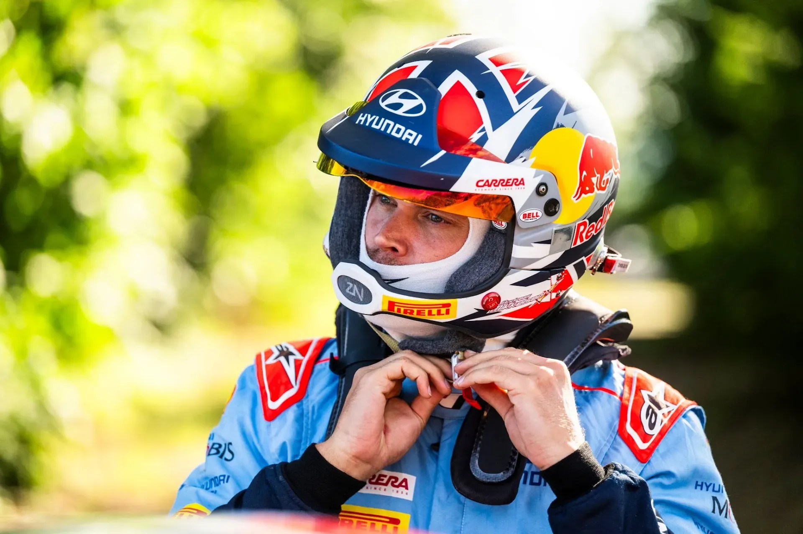
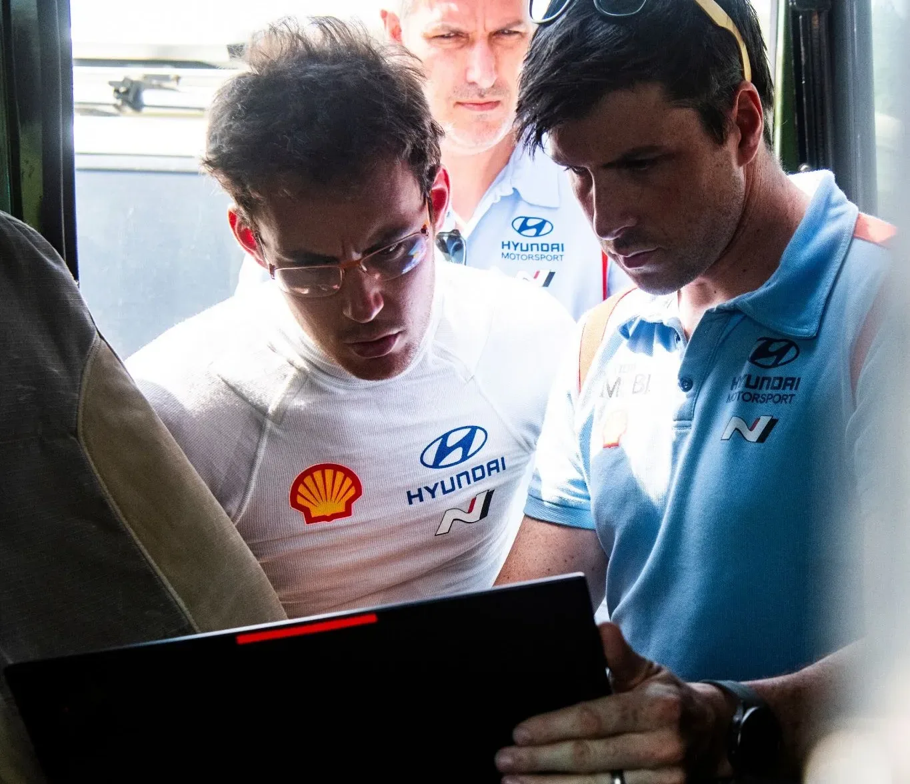
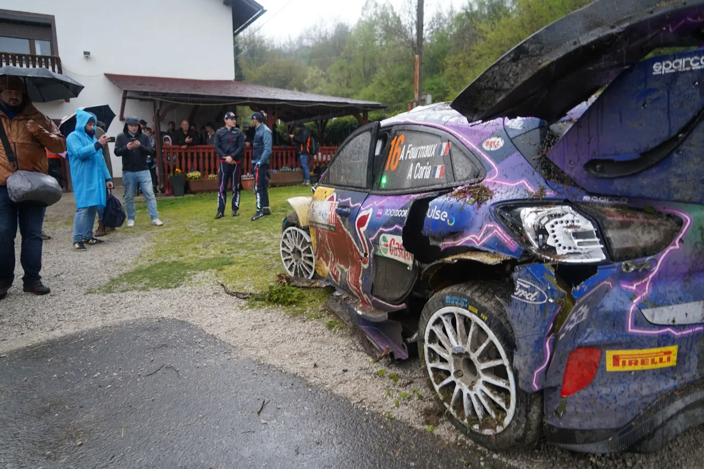
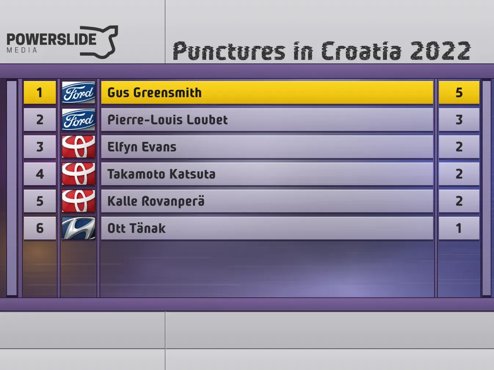
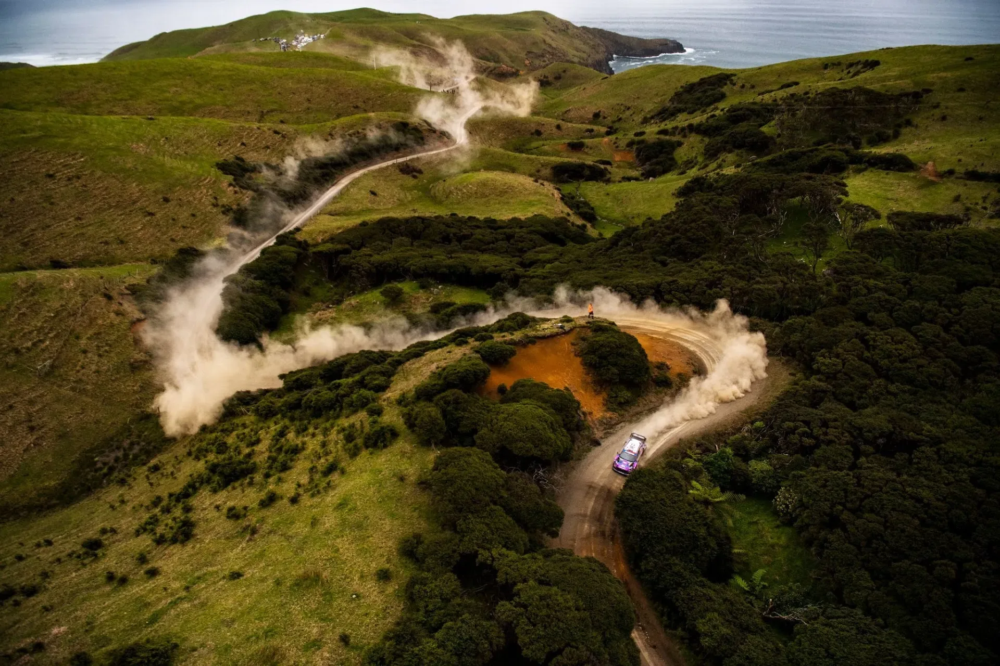
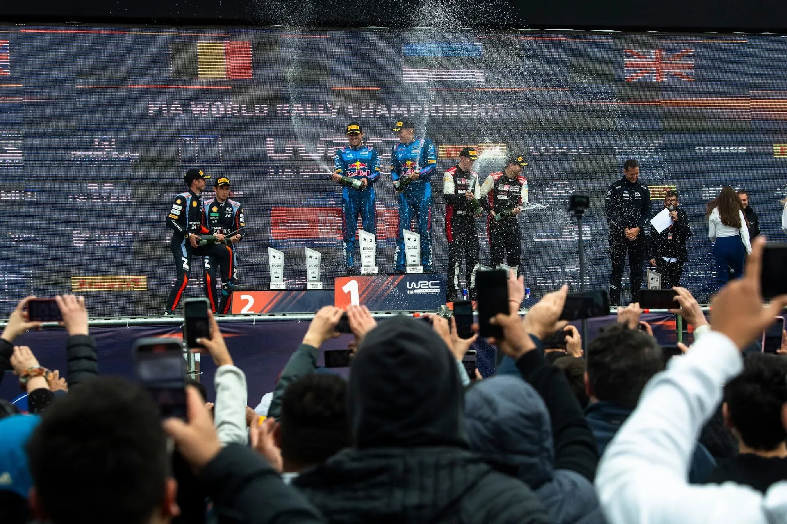

7 Rally1 Era Moments you Forgot!
Images: Jaanus Ree / Red Bull Content Pool
The Rally1 era, at least in its current state, came at an end following the sensational finish of the 2026 Rally Italia Sardegna. The second pass of the Sassari - Argentiera stage was the last time we'll see the Puma, i20 N and GR Yaris Rally1s in anger - at least in the WRC.
So much happened over the past five seasons that it's hard to keep track of it all, so here are seven moments from the Rally1 era that you may have forgotten!
7 - Hyundai's Disasterous Debut - Monte Carlo 2022

Jaanus Ree / Red Bull Content Pool
The start of the Rally1 era was far from ideal for the South Korean manufacturer. The team was the last of the three manufacturers to commit to the ruleset, with their car only hitting the stages for testing in November 2021. Thierry Neuville's testing crash further complicated things, destroying the team's only chassis. At the same time, team principal Andrea Adamo departed the team due to personal reasons.
The team arrived in Monte Carlo for the 2022 season opener in a rushed car, and without proper leadership. The result was an event to forget. The Hyundai i20 N Rally1 was comfortably the slowest of the three cars, but pace wasn't the only issue. Oliver Solberg had to retire from his first outing with the factory team due to medical reasons, after the car kept being engulfed in fumes following an off on Saturday. He wasn't the only one to suffer issues, as Thierry Neuville drove most of Saturday with a broken damper, which eventually let go in the afternoon, with the Belgian driving two stages with a collapsed suspension.
Tanak's rally was far from perfect too, with the Estonian gambling with dry tyres in the snowy Saint-Geniez / Thoard test, going off the road and damaging his cooling package, retiring from the event.
6 - Fourmaux's Japan one-off - Japan 2023

Jaanus Ree / Red Bull Content Pool
Adrien Fourmaux had been let go by M-Sport's main team following a disasterous 2022 campaign. The Frenchman was however retained by the team, competing in WRC2 for the 2023 season. Despite retiring from the lead on the wet Power Stage in Rally Italia Sardegna, Fourmaux's season was positive, with the Frenchman winning the RC2 class in that year's Central European Rally. Fourmaux also won the 2023 British Rally Championship crown.
Elsewhere, fellow country man Pierre-Louis Loubet was busy having a nightmarish season of his own with the Puma Rally1. A co-driver change from the experienced Nicolas Gilsoul to Benjamin Veillas did not help, with Loubet having a rally with incidents in CER. Following the end of the rally, it was announced that the Corsican would not compete in the season's final round in Japan, and that Fourmaux would be replacing him.
On his first outing in the WRC's top-class in just about 13 months, Fourmaux would not have a rally to remember, as the Frenchman was able to only set a time in the rally's opening Super Special, going off the road in the treacherous rainy conditions on Friday's opening test - ending up on top of Dani Sordo's Hyundai!
5 - Mikkelsen's Near Miss - Poland 2024

Jaanus Ree / Red Bull Content Pool
Hyundai's decision to split its third car three ways gave Andreas Mikkelsen a way back into the top class for the first time since 2019. But the Norwegian was cast as the team's asphalt specialist, a role that didn't play to his strengths. He never found a solid base to build on during his outings with the Korean manufacturer, and he crashed out of both the Central European Rally and Rally Japan. The Japan crash proved costly, as Hyundai lost the manufacturers' title to Toyota by just three points.
There was one event in which Mikkelsen was able to showcase his speed in. Poland. Rally Poland was an event the Norwegian had won back in 2016, and proved he had what it takes to repeat that result, by leading the rally after Friday. Mikkelsen would lose the lead to Kalle Rovanperä, who was subbing in for Sebastien Ogier, on Saturday, but stated that he was going to give his all for the rally win on Sunday.
Unfortunately for Mikkelsen, he would nudge a bank, picking up a puncture on the day's first test, also damaging his i20 N Rally1 Hybrid. He would have to cruise for the rest of the day's stages, eventually dropping to 6th.
4 - Neuville gets Disqualified - Safari 2023

Jaanus Ree / Red Bull Content Pool
Thierry Neuville's Safari went from bad to worse after the Belgian suffered a broken suspension after a hit took out his i20 N Rally1's front right suspension. The Hyundai driver restarted the following day, climbing inside the top-10, and went on to win the rally's Wolf Power Stage, claiming the five bonus points that come with it. Or did he?
Turns out Neuville was concerned with the change in position of sizeable rocks following the end of the pre-event recce, something that had happened in the past in the Safari, and had tasked a person to drive through the stages, documenting such cases. The person was on private property without authorisation and was stopped by Officials in two locations on two different days. Neuville admitted to the stewards that he was aware of the identified person, and apologised for the offence, but was still disqualified from the event.
3 - Croatia creates tyre chaos - Croatia 2022

Dirtfish.com
The Croatia Rally came to the WRC with a bang in 2021, providing the series with a rally to remember, with Sebastien Ogier coming out on top in a close fight with teammate Elfyn Evans. The 2022 edition proved to be equally eventful, with the weather also playing its part. Heavy rain made the roads slippery and the cuts muddy, with the drivers pulling a lot of muck onto the road. That proved to not be the best for the extra soft Cinturato RWB tyre that Pirelli had for the wet, as the tyre ended up being very prone to punctures.
In total there were 15 punctures, most of which came on Friday. Pierre-Louis Loubet's first day in the Rally1 was over almost immediately: three punctures in the opening two stages forced him out of Friday's action. Gus Greensmith fared even worse, with four failures on the wet tyres leaving him without enough spare wheels to continue that day. Both M-Sport drivers rejoined under restart rules, but their rallies had long been ruined. Greensmith would have one more on Saturday, with Evans, Katsuta, Tänak and Rovanperä also suffering from punctures in the rally.
In the end, we were served a finale equal to the one of the 2021 edition, with Rovanperä fighting off a worse tyre choice to win the rally in the Power Stage over Ott Tänak.

2 - Rally New Zealand comes back - New Zealand 2022

Jaanus Ree / Red Bull Content Pool
Rally New Zealand made a long awaited return to the WRC's calendar in 2022, following a decade of absence. The rally proved to be eventful, with M-Sport showing some eye-catching pace early on, with Gus Greensmith and Craig Breen both winning stages on Friday. Things quickly took a turn for the worse for the team - as was so often the case in 2022, with Craig Breen going off the road on the same corner Colin McRae had done so on Whaanga Coast, fighting for the lead. Greensmith would have a spectacular roll in front of the TV cameras on Saturday's Komokoriki stage.
None of this mattered to Kalle Rovanperä however. The Finn took the lead after Evans rolled out of the rally on Saturday, and was able to maintain this position, claiming his maiden championship title!
1 - M-Sport's last win to date - Rally Chile 2023

Jaanus Ree / Red Bull Content Pool
Ott Tänak's return to M-Sport for 2023 got off to a dream start, with the Estonian winning Rally Sweden in just his second outing back with the team. What followed, however, was a rollercoaster season, with Tänak struggling to get on terms with the Puma Rally1, while also suffering from several mechanical issues. A notable moment came in Tänak's home rally, where the Estonian was forced to an engine change following his old one expiring on the event's Shakedown, picking up a 5-minute penalty.
Rally Chile however would be different. The rally didn't start well for the British squad, as Pierre-Louis Loubet destroyed his Puma in a big crash on Friday's Rio Claro test, leaving Tänak to fly the M-Sport flag on his own. Hyundai had a nightmare opener too, with Esapekka Lappi rolling out on the very first stage. Tänak, on the other hand, was flawless, taking the lead on Friday and ending the day 10 seconds clear. Saturday was where the rally was won, though. Toyota's tyre choice backfired on the abrasive stages, sending their cars to the back. Tänak managed his tyres perfectly, and went into Sunday with a 58.3-second lead.
Tänak would manage his lead on Sunday to pick up his second win of the season. Shortly after, the Estonian would announce his departure from the team, joining Hyundai for 2024. M-Sport haven't managed to win a rally ever since.


Comments